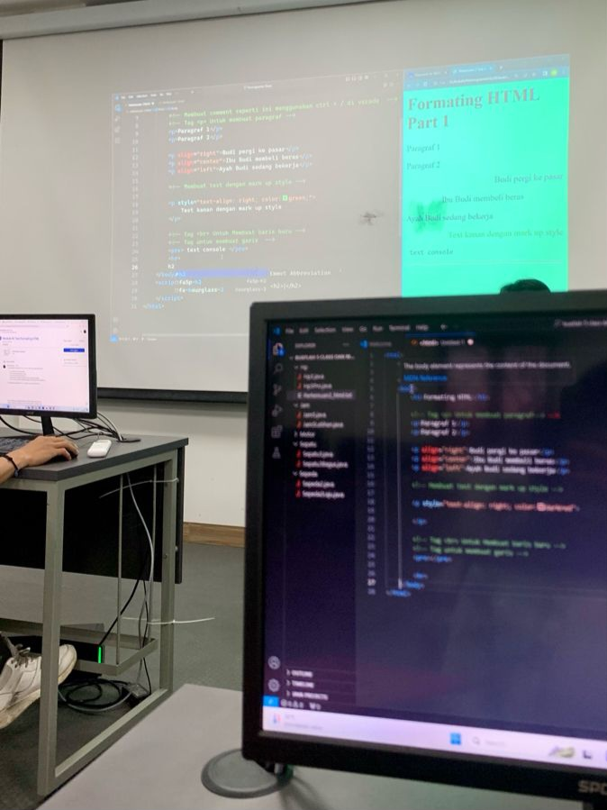
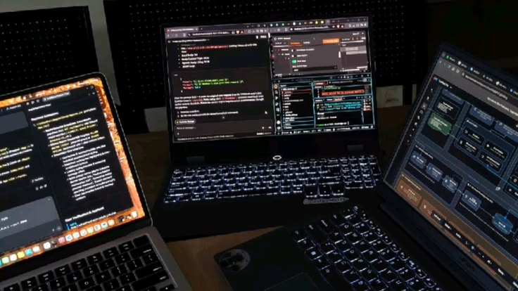
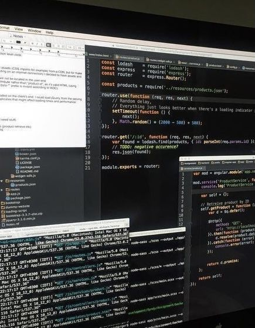
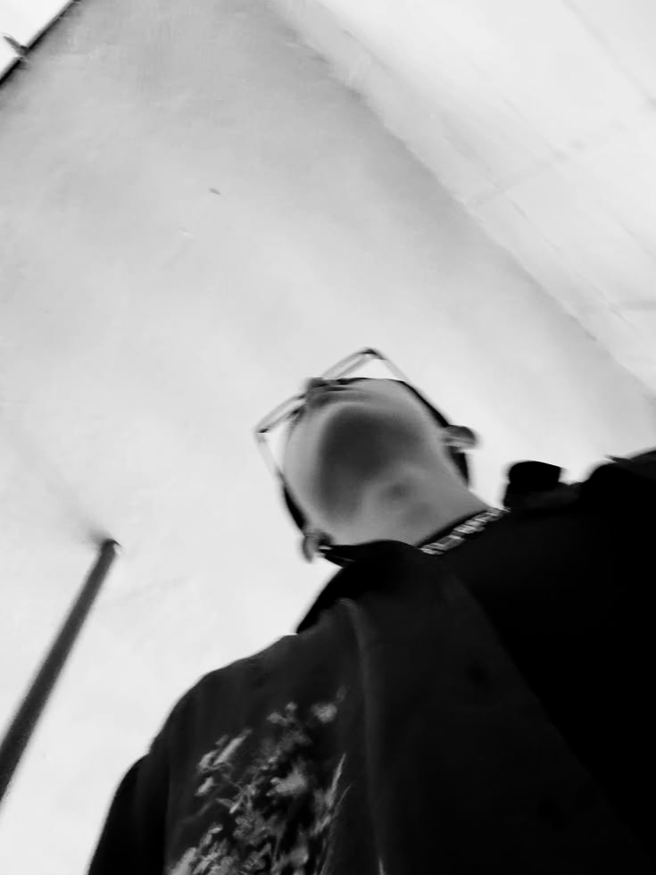

01 FOUNDATION
VOCATIONAL SCHOOL
SMK — TKJ
Memulai fondasi di dunia teknologi lewat jurusan Teknik Komputer dan Jaringan. Dari perangkat keras, jaringan komputer, sampai mengenal cara kerja sistem di balik layar.
⌘
HELLO, WORLD. I'M
Building things with code.
Learning things along the way.
NGULIK UNTUK
MASA DEPAN.
NOT JUST A NAME ON A SCREEN.
Halo, gue Raka Ardhian Nugraha. Lahir dan tumbuh di Bandung, 18 September 2006.
Sekarang gue sedang menempuh perjalanan sebagai mahasiswa di bidang Informatika, Fakultas / Sekolah Teknik Elektro dan Informatika — Komputasi (STEI-K), Institut Teknologi Bandung.
Gue suka dunia teknologi, terutama saat bisa mengubah barisan kode menjadi sesuatu yang benar-benar bisa dipakai. Buat gue, ngoding bukan cuma soal bikin program jalan, tapi juga soal rasa penasaran, proses mencoba, dan keberanian buat mencari tahu.
ANAK TEKNIK ITU BUKAN HARUS
TAHU SEMUANYA. TAPI MAU TERUS BELAJAR.
Jalan setiap orang punya tempo masing-masing. Ini beberapa bab yang membentuk perjalanan gue sampai hari ini.
Memulai fondasi di dunia teknologi lewat jurusan Teknik Komputer dan Jaringan. Dari perangkat keras, jaringan komputer, sampai mengenal cara kerja sistem di balik layar.
Setelah lulus SMK, gue mengambil jeda satu tahun untuk bekerja terlebih dahulu. Bukan berhenti mengejar tujuan, tapi memberi ruang untuk belajar dari dunia kerja, mengenal tanggung jawab, dan mempersiapkan langkah berikutnya.
Melanjutkan perjalanan akademik di ITB, STEI-K. Bab baru untuk memperdalam ilmu, memperluas cara berpikir, dan membangun sesuatu yang lebih besar dari sekadar tugas kuliah.
* Perjalanan masih berlangsung. To be continued.
Hal-hal yang gue pelajari, utak-atik, dan ingin terus kembangkan.
Suka merancang dan membangun website dari nol. Mulai dari menyusun struktur, mengatur tampilan, sampai membuat interaksi yang terasa hidup.
Bekal dari TKJ: memahami jaringan komputer, konektivitas, dan bagaimana perangkat saling terhubung.
Mencoba memahami masalah, mencari kemungkinan, lalu menguji solusi satu per satu.
Terbuka untuk hal baru, eksplorasi teknologi, dan kesempatan untuk berkembang lewat pengalaman.
raka@itb:~$ whoami
A learner. A builder. A work in progress.
raka@itb:~$ cat philosophy.txt
Kalau belum bisa, cari tahu. Kalau gagal, debug lagi.
raka@itb:~$ _
Setiap proyek punya cerita.



Di balik layar, ada kehidupan yang terus berjalan. Beberapa potongan momen yang ingin disimpan di sini.

GOT AN IDEA? A PROJECT? OR JUST WANT TO SAY HI?
Gue percaya hal menarik sering dimulai dari satu percakapan. Kalau ada kesempatan untuk belajar, berkolaborasi, atau bertukar ide, feel free to reach out.
EMAIL ME↗